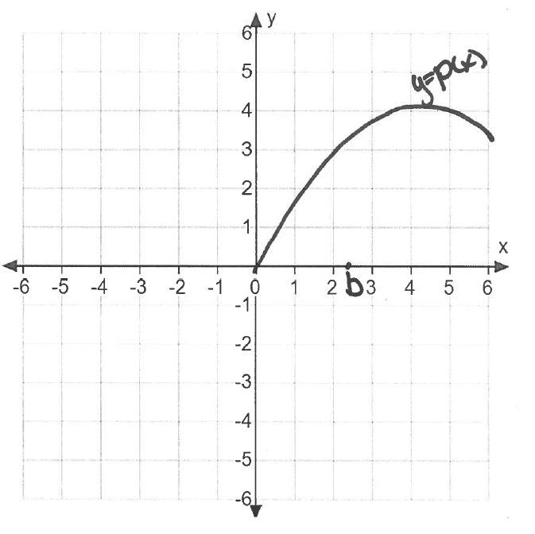

The graph of a function \(p\) and a point in its domain, \(b\), are shown in the figure below.

- (a)
- In the figure above, draw and mark clearly the quantity \(\Delta y=p(b)-p(1)\) and the quantity \(\Delta x=b-1\).
- (b)
- Complete the sentence. The quotient \(\frac {p(b)-p(1)}{b-1}\) is the slope...
- (c)
- Complete the sentence. Provided it exists, the limit \(\lim _{x \to 1}\frac {p(x)-p(1)}{x-1}\) is the slope...